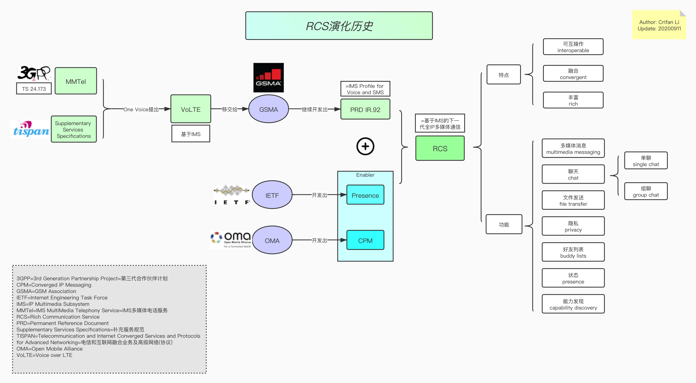

RCS演化历史
此处从技术角度来解释，RCS的演化历史，如何诞生的，以及核心特点：
- RCS演化历史
- 图
- 本地
- 
- 在线浏览
- 本地
- 文字版
- 简述
- 3GPP的MMTel
- ->（One Voice提出）VoLTE
- -> 移交给GSMA，独立出RCS项目
+辅助协议：IETF和OMA的Presence和CPM- =完整的RCS
- 概述：基于IMS的全IP多媒体通信
- 特点：
- 可互操作
- 融合
- 丰富
- 功能
- 多媒体消息multimedia messaging
- 聊天chat
- single chat 单聊
- group chat 群聊=组聊
- 文件发送file transfer
- 隐私privacy
- 好友列表buddy lists
- 状态 presence
- 能力发现capability discovery
- 详解
- 最早在部署LTE期间产生了需求：基于IMS的电话服务，即VoLTE
- 通过考虑到3GPP第7版中定义的TS 24.173中规定的 MMTel=IMS MultiMedia Telephony Service=IMS多媒体电话服务 标准，One Voice行业计划构想了基于LTE的基于IMS的电话服务的简单配置文件
- One Voice还考虑了由ETSI TISPAN开发的补充服务规范Supplementary Services Specifications，该规范已转移到3GPP
- One Voice规范已提交给GSM协会（GSMA），作为基于IMS的VoLTE解决方案进行进一步增强。 基于一种语音规范，GSMA开发了永久参考文档（PRD）IR.92。 IR.92也称为语音和SMS的IMS配置文件，它指定了3GPP第8版中定义的最低强制性功能集，无线设备和网络将VoLTE实施为可互操作的，高质量的，基于IMS的电话通过LTE服务。 虽然VoLTE适合替代现有的CS语音，但是GSMA PRD IR.92还介绍了支持CS-IMS语音转换的功能。
- 在此期间，IETF=Internet Engineering Task Force=互联网工程任务组 和 OMA=Open Mobile Alliance=开放移动联盟 等标准机构正在开发使能技术，例如Presence=状态，CPM=Converged IP Messaging=融合IP消息系统 和其他支持使能器，用作下一代消息框架。 很明显，有必要发展现有的基于xMS的消息传递服务，以提供更丰富的用户体验，并允许基于它的新服务的开发。
- RCS最初是由多家主要运营商和OEM，于2007年发起的一项行业倡议。他们希望探索下一代全IP多媒体通信，从而能够快速采用移动应用程序和服务，并基于IMS架构，提供可互操作，融合和丰富的通信体验。 当由于业界的极大兴趣而使这一计划变得太大时，把计划转向了GSMA，以利用其组织支持和项目管理技能使之成为真正的全球项目。 在GSMA中，Network 2020计划=Network 2020 Program 下的 全球规范小组=Global Specification Group 负责开发和维护相关的RCS规范
- 简述
- 图